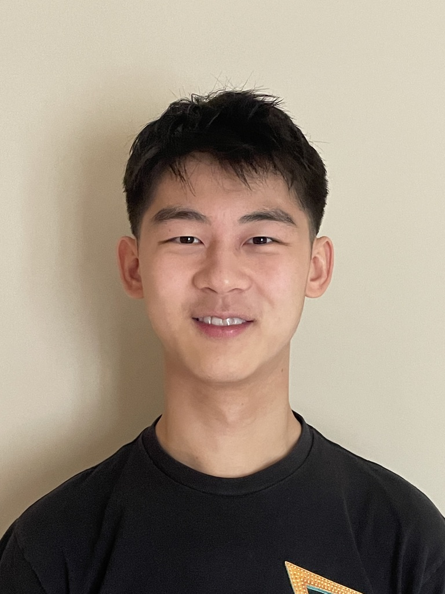

Workshop Schedule
8:15-9:00
Architecture 2.0 Introduction
[slides]
9:15–10:00
Traditional ML / Lightweight Models
- Lightweight AI for Efficient Resource Management in Heterogeneous-Core Architectures [paper] [slides]
- CEO: A Causal Evaluation and Optimization Framework for Datacenter Management Policies [paper] [slides]
- Closed-Loop Online Inference Assurance for Cyber-Physical Systems with Neural Network Controllers [paper]
10:30–11:15
Keynote Address 1: Enabling AI-driven Full-Stack Co-Optimization of Distributed AI Systems for the Architecture 2.0 era
11:30–12:00
LLM Agents Part 1
1:30–2:15
Keynote Address 2: The New Golden Edge for the Computer Architect
[slides]
- We are often told that we are in a golden age for computer architecture, but this moment is something more profound: a golden age for the computer architect. Advances in AI are collapsing the traditional boundaries between architecture, software, and hardware implementation, enabling architects to move from idea to realization across the full stack. Yet, despite this promise, today’s AI systems still struggle to reason about architectural design due to missing abstractions and outdated tooling. In this talk, I will argue that the next era of innovation is not just about better hardware, but about redefining how we design systems: introducing new machine-understandable abstractions, building AI-native tools, and embracing system-level thinking in a world of increasingly specialized and heterogeneous architectures. As AI workloads diversify and hardware fragments, the role of the architect expands—from optimizing components to defining design spaces, composing systems, and shaping the software–hardware interface. This is not just a technological shift, but a redefinition of what it means to be a computer architect.
2:30–3:30
LLM Agents Part 2
- ArchAgent: Towards Agentic Architecture Discovery [paper]
- EggMind: LLM-Driven Two-Dimensional Intelligence for Scalable Equality Saturation [paper] [slides]
- AC Loop: An LLM-Based End-to-End Auto Calibration Framework [paper]
- LLM-Augmented FPGA Timing Closure: Toward Intelligent Static Timing Analysis Agents [paper]
4:00–5:00
Wacky Ideas / Proposals
- The Case for Uncertainty-Governed Predictor Hierarchies in ML for Systems [paper]
- Cloning the Unshareable: Agentic AI for Synthesizing Open, Production-Faithful Datacenter Benchmarks [paper] [slides]
- Hunting for Offload: Automated Discovery of Acceleratable Code in Datacenters [paper] [slides]
- Multi-Agent Memory from a Computer Architecture Perspective: Visions and Challenges Ahead [paper]
QuArch Architecture & Systems Competition
This competition is sponsored by
Note: Competition submissions are closed; however the QuArch dataset is still accepting submissions here.
We invite students to participate in the QuArch Architecture & Systems Competition, which focuses on creating high-quality questions that evaluate reasoning in the core displines of ASPLOS: computer architecture, programming languages, compilers, and operating systems. The goal of this competition is to assess and advance the ability of AI systems to reason about real-world systems concepts that span computer architecture, programming languages, compilers, and operating systems.
🏆 Competition winners
- 🥇 Mahnoor Malik (NED University of Technology)
- 🥈 User “hexu” (Advanced Computing SIG)
- 🥉 Gokulan Ravi (Purdue University)
🏆 About the Competition
Objective:
Participants will submit original questions designed to probe understanding, analysis, and reasoning in computer architecture and related systems domains. Questions may target conceptual knowledge, design trade-offs, performance analysis, or optimization challenges.
All questions should be suitable for evaluating an AI system’s architectural reasoning capabilities and should challenge and evaluate such capabilities.
Evaluation:
A committee will review submissions and select winners based on:
- Quality & difficulty
- Creativity & relevance
- Depth & quantity
Tip: We encourage questions that reflect realistic architectural scenarios, modern hardware platforms, and emerging systems challenges.
Both exploratory and polished submissions are welcome. No prior competition experience is required!
🏆 Awards
Winners will be recognized with cash prizes, with the potential for additional physical awards.
📚 Resources
For more information and submission details, visit the QuArch website or read the QuArch paper.
Additional links and references are collected in the Resources section below.
📅 Timeline
Submission Deadline: March 7, 2026 March 18, 2026 (AoE)
Winners Announcement: March 23, 2026 (at the workshop)
Call for Papers: AI for Systems Design
Note: Submissions closed. View accepted papers on OpenReview.
We invite submissions that explore the use of artificial intelligence to design, analyze, optimize, or evaluate computer systems. The workshop aims to bring together researchers and practitioners applying AI techniques to systems challenges across the hardware stack.
We welcome both work-in-progress and completed research that advances the state of the art or opens new directions for AI-driven systems research.
Note: The workshop will not have formal proceedings, and authors are free to publish extended versions of their work in other conferences and journals.
Submission Type
We welcome works of three different formats to the workshop:
- Early/Work-in-Progress Research (4 Pages)
- Extended Abstract of Completed Research (2 Pages, with pointer to full-length paper)
- Position/Opinion Papers (2 Pages)
Topics of Interest
Submissions should focus on AI for Systems, spanning computer architecture, programming languages, and operating systems, including but not limited to the following areas:
Computer Architecture
- AI-driven microarchitecture design, tuning, and exploration
- Learning-based design space exploration and architectural trade-off analysis
- Processor, accelerator, and heterogeneous system design
- GPU, TPU, and accelerator architectures and kernel optimization
- Memory systems, cache hierarchies, interconnects, and storage optimization using AI
- Learning-based performance, power, energy, and reliability modeling
- Surrogate models to accelerate architectural simulation and evaluation
- AI methods for identifying architectural bottlenecks and inefficiencies
Programming Languages and Compilers
- AI-assisted compiler optimization and code generation
- Learning-based cost models for compiler and runtime decisions
- Automatic kernel transformation, scheduling, and tuning
- Program analysis and optimization using machine learning
- Cross-layer optimization between compilers, runtimes, and hardware
- Domain-specific languages (DSLs) and abstractions enabled by AI
Operating Systems and Runtime Systems
- AI-driven scheduling, resource management, and system optimization
- Learning-based memory management, caching, and I/O policies
- Intelligent runtime systems for heterogeneous and accelerator-rich platforms
- Performance modeling and prediction for OS and runtime decisions
- AI for system monitoring, diagnosis, and anomaly detection
- Co-design of OS policies with hardware and compiler support
We also welcome contributions on datasets, benchmarks, and open-source infrastructure that enable or evaluate AI-driven approaches across the architecture–language–OS stack.
Reviewing Details
Submission and Platform: All submissions will be handled through the OpenReview platform. The review process will be single-blind; therefore, submissions should include author names and affiliations and should not be anonymized.
Decisions: All accept/reject decisions will be made exclusively by the human members of the organizing committee. Submissions will be evaluated for relevance to the workshop theme, technical novelty, and clarity of presentation.
AI-Assisted Feedback: In alignment with the workshop's focus on leveraging AI, the organizing committee will pilot ArchScholar, an AI-based review assistant that is custom-built on Archipedia: a corpus of computer architecture and systems literature spanning 50 years. This tool will be used to generate preliminary written feedback and reviews, which will be publicly posted on OpenReview. Importantly, the AI-assisted tool is used solely to support the review process and to provide individualized written feedback to authors; it does not determine final decisions. We welcome feedback from the community and hope to encourage thoughtful, constructive discussion around the use of AI-assisted reviewing as part of the workshop.
Submission Details
- Early/Work-in-Progress Research: 4 pages
- Extended Abstract of Completed Research: 2 pages (with pointer to full-length paper)
- Position/Opinion Papers: 2 pages
Resources
We provide a small list of relevant resources to Architecture 2.0:
- QuArch Website
- QuArch Paper (arXiv)
- Architecture 2.0 Online Community Workshop
- A Computer Architect’s Guide to Designing Abstractions for Intelligent Systems (SIGARCH Blog)
- Architecture 2.0: Foundations of Artificial Intelligence Agents for Modern Computer System Design (IEEE Computer)
- Architecture 2.0: Why Computer Architects Need a Data-Centric AI Gymnasium (SIGARCH Blog)
Organizing Team

Andy Cheng
Harvard University
Shvetank Prakash
Harvard University

Arya Tschand
Harvard University
Shreyas Grampurohit
Harvard University
Kai Kleinbard
Harvard University
Kabiir Kohli
Harvard University
Ankita Nayak
Gimlet Labs
Adrian Nunez-Rocha
Qualcomm

Vijay Janapa Reddi
Harvard University
Zishen Wan
Harvard University
Chenyu Wang
Harvard University